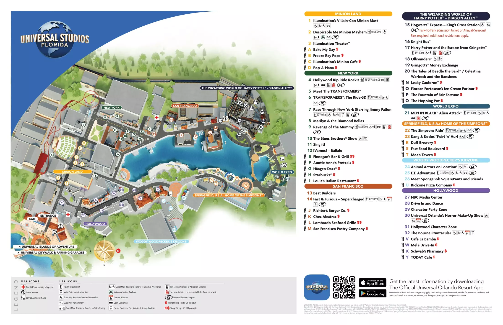
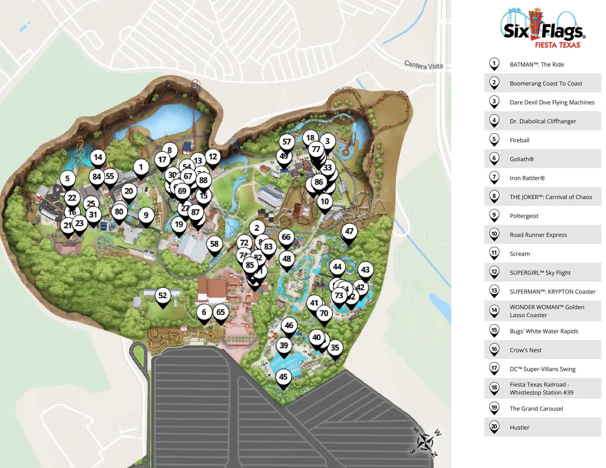
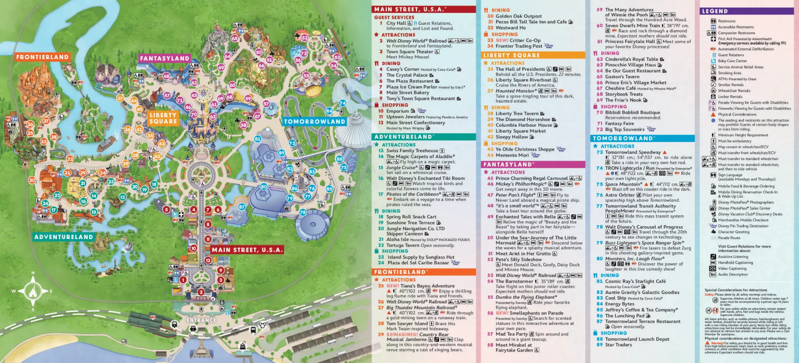

Waybot · Service design · Product design · 3D
More park.
Less waiting.
Designing a physical-digital park guide that turns passive queue time into more time for discovery, spending, and play.
Read the case study ↓NAVIGATE
BOOK
ASSIST
Good morning!Where should
we go next?
we go next?
Book a rideFind a place
WAYBOT
Executive summary
A service platform for happier visitors and better-managed parks.
Large amusement parks promise a full day of memorable experiences. Yet visitors often spend that expensive day standing in queues, navigating confusing maps, or searching for assistance.
Waybot explores how a friendly mobile guide, connected to park operations, could help visitors reserve rides, navigate, and request support while helping parks distribute crowds and create more opportunities for in-park engagement.
01
Discover
The challenge
A ticket buys access.
Queues consume the experience.
Across major parks, millions of annual visitors move through complex environments with fluctuating demand, limited staff, and dozens of competing attractions.
The problem was bigger than long lines. Visitors struggled to understand wait times, navigate the park, coordinate their day, and access support when they needed it.
How might wealleviate the need to stand in long queues while improving the full park experience?
58MAnnual Disney World visitors*
32.8MAnnual Six Flags visitors*
10.9MAnnual Universal Florida visitors*
*Benchmark figures used during the original project to understand the scale and complexity of large parks.
Competitive benchmark · Mapping the scale
Three parks.
One shared challenge.
I compared parks with different footprints, audiences, and attraction mixes to understand why a flexible guidance system needed to work beyond any single park.

01 · ORLANDO, FLORIDASince 1990
Universal Studios Florida
A dense, story-driven park where annual events and high-profile attractions create concentrated visitor demand.
10.9M visitors*Ranked 11th*

02 · NORTH AMERICASince 1960
Six Flags
A sprawling thrill-focused environment where attraction demand and walking distance make orchestration essential.
32.8M visitors*260 acres*

03 · BAY LAKE, FLORIDASince 1971
Disney World
A destination-scale resort with multiple parks, experiences, and complex family itineraries to coordinate.
58M visitors*27,000 acres*
What the maps revealed
As park size and attraction variety increase, visitors need more than directions. They need help making decisions throughout the day.
Signals from the experience
The queue was only
the visible problem.
Mapping the broader journey revealed connected breakdowns across planning, arrival, navigation, attractions, safety, and support.
Waiting creates dead time
Visitors lose valuable park time standing in lines and struggle to allocate their day across attractions.
Navigation adds friction
Large environments and information-heavy apps make it difficult to find attractions and understand what to expect.
Help is not always nearby
Peak crowds stretch on-ground personnel while missing children, lost items, and accessibility needs demand fast assistance.
Demand is uneven
Traffic fluctuates throughout the park, producing overloaded attractions while other experiences remain underused.
02
Define
Journey analysis
Where attention
and value diverge.
Visitor engagement peaks during the experience itself. Business engagement is strongest around ticketing and queue management. Waybot targets the gap between them.
PlanningBookingEntryExperienceLeaving
DealsTicketingNavigationQueue managementSupport
Opportunity
Convert freed queue time into discovery, delight, and measurable park value.
The value proposition
A friendly guide that helps visitors spend less time managing the park and more time experiencing it.
Reserve. Roam. Return.
Join virtual queues, understand the park, discover nearby experiences, and get assistance without depending entirely on a phone.
See. Balance. Improve.
Distribute demand, extend service coverage, understand visitor behavior, and surface relevant park offers.
03
Design
Product strategy
Not another app.
A connected service.
The concept combines a mobile physical guide, visitor interface, virtual queue system, and park operations integration.
WAYBOT
01Virtual queues
Reserve slots and receive return-time guidance.
02Wayfinding
Guide visitors and reveal nearby opportunities.
03Assistance
Support missing-child, lost-item, and help requests.
04Park insights
Surface demand, movement, and service patterns.
Form exploration
Friendly enough to approach.
Practical enough to deploy.
Early sketches explored mobility, screen placement, proportions, and a character that balances the Caregiver and Jester archetypes.
Approachable character studies
Screen and body integration
Mobile guidance concepts
Selected direction
Original sketches will be inserted here as optimized project assets in the final content pass.
Personality design · Caregiver meets Jester
Helpful should still
feel human.
Waybot uses simple expressions to communicate emotional state at a glance, making assistance feel friendly rather than transactional.
When people need helpWarm + reassuring
A welcoming expression lowers the barrier to asking for assistance.
When people say “I’m handsome”Playful + memorable
A little personality creates delight and makes the service easier to remember.
When people say “I’m fat”Expressive + bounded
Waybot responds to inappropriate comments without escalating the interaction.
04
Prototype
Final direction
A moving service touchpoint with a business model built in.
The final form uses a large portrait display, illuminated base, and compact mobile body. The screen supports core park tasks while creating space for contextual park promotions during idle moments.
Virtual queue bookingLive navigationReport missingCall for assistanceContextual offersVisitor insights
11:43 · 75°What can I
help with?
help with?
While you waitLunch is 4 min away →
WAYBOT
05
Measure
Business impact framework
What success would
look like.
As a concept project, these are proposed success measures, not claimed launch results.
Measure satisfaction, itinerary completion, and time spent in physical queues.
Measure purchases and offer engagement during time freed by virtual queues.
Measure crowd distribution, ride demand balance, and service-request resolution.
Measure satisfaction, recommendation, and likelihood of another visit.
Recommended pilot
Start with one high-traffic park zone, three Waybots, and a limited virtual-queue integration.
Compare the pilot zone against a control area using visitor satisfaction, staff requests, attraction utilization, offer engagement, and task-completion metrics.
Reflection
The strongest experience does not always live inside a screen.
Waybot pushed me to think beyond interface design and consider the complete service: visitors, park staff, operations systems, physical form, and the business model supporting it.
The next step would be validating the concept with visitors and park employees, then narrowing the first release around virtual queues, navigation, and assistance.
Explore more work→Finale · Prototype in action
Meet Waybot.
The motion prototype demonstrates how Waybot’s physical form, interface, and personality come together as one service experience.